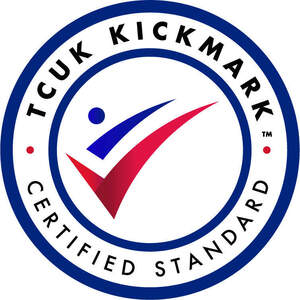

Trade Mark Journal No.2025/043 24 October 2025
UK00004033603 2 April 2024 (41)
Certification Mark

- Class 41
- Organisation of sports tournaments; Organisation of sports competitions; Competitions (Organization of sports -); Organization of sports competitions; Organization of electronic sports competitions; Organisation of sports events in the field of football; Sports refereeing; Organisation of sporting competitions and sports events; Organisation of sports tuition; Sports coaching; Organising of sports and sports events; Organising of sports competitions and sports events; Educational and training services relating to sport; Education, entertainment and sports; Organisation of competitions [education or entertainment]; Organisation of competitions (education or entertainment); Competitions (organisation of -) [education or entertainment]; Organisation of competitions for education or entertainment; Sports training; Training in sports; Organisation of sporting competitions; Sports education services; Training of sports players; Services for the organisation of sports events; Organising of sports competitions; Competitions (Organising of sports -); Sports competitions (Organising of -); Sports coaching services; Organisation of sporting activities and competitions; Sports club services; Management of events for sporting clubs; Sports and fitness; Sports officiating; Organization of education competitions; Sports activities; Arrangement of sports competitions; Information relating to sports education; Sports refereeing and officiating; Information services relating to sport; Sporting education services; Organisation of sporting events and competitions; Provision of sporting competitions; Provision of sports installations for figure and speed skating championships; Coaching services for sporting activities; Providing facilities for sports tournaments; Tournaments (Staging of sports -); Organising of sports events; Organisation of youth training schemes relating to the building industry.
TAEKWONDO COUNCIL UNITED KINGDOM
The Regulations provisionally accepted by the Registrar for governing the use of this Certification trade mark are open to inspection at the Trade Marks Registry, from where copies may be obtained. If no opposition arises the Registrar will approve the Regulations and the mark will proceed to registration.